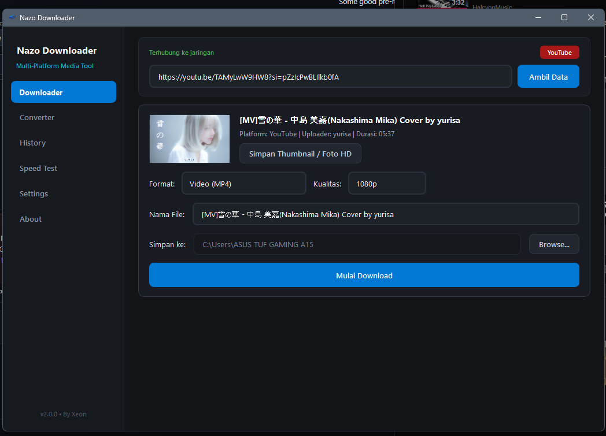
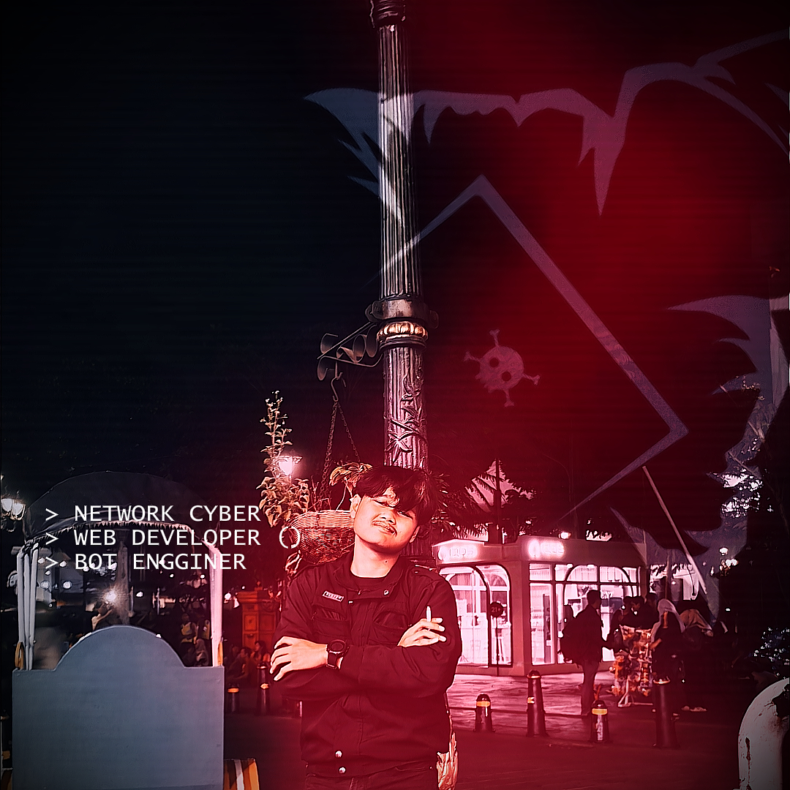

Aplikasi desktop mandiri untuk mengunduh media dari YouTube, TikTok tanpa watermark, Instagram Reels, dan Facebook, serta konversi format audio/video bertenaga engine FFmpeg.

Dirancang untuk kecepatan unduh maksimal, kualitas media jernih, dan alur kerja yang mudah tanpa hambatan.
Unduh video dan audio resolusi tinggi hingga 4K dari YouTube, TikTok tanpa watermark, Instagram Reels, dan Facebook dalam hitungan detik.
Ubah format video dan audio (MP4, MP3, WAV, FLAC, MKV, AVI) secara cepat dan offline tanpa menurunkan kualitas asli berkas.
Navigasi intuitif bebas distraksi dengan pilihan tema Dark Mode dan Light Mode yang elegan sesuai kenyamanan visual Anda.
Kelola, cari, dan kelompokkan riwayat unduhan berdasarkan platform dengan akses cepat langsung ke folder penyimpanan.
Uji kecepatan koneksi internet (Ping, Download, Upload) secara presisi untuk memastikan proses unduh berjalan maksimal.
Berjalan sepenuhnya secara lokal di komputer Anda tanpa iklan yang mengganggu, tanpa pelacak data, dan tanpa batasan kuota.
Empat langkah sederhana untuk mengunduh media dari tautan.
Salin tautan video atau audio dari YouTube, TikTok, Instagram Reels, atau Facebook.
Tempel URL pada kolom Downloader dan klik tombol Ambil Data untuk memuat info dan thumbnail.
Pilih format Video (MP4) atau Audio (MP3) serta pilihan resolusi yang tersedia.
Klik tombol Mulai Download. File tersimpan di folder tujuan dan dicatat di tab Riwayat.
Pilih paket rilis Nazo Downloader yang sesuai dengan lingkungan sistem Anda.
Informasi pengembang independen di balik aplikasi Nazo Downloader.

Programer biasa yang masih terus belajar dari kesalahan ^_^
Jika aplikasi ini bermanfaat bagi produktivitas Anda, Anda dapat memberikan apresiasi dan dukungan pengembangan berkelanjutan melalui kanal pembayaran berikut.